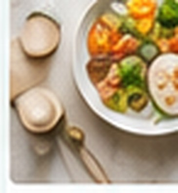

Статьи
Экспертные материалы о щитовидной железе, обмене веществ и подготовке к консультации.
Щитовидная железа
Повышен ТТГ: что может означать результат анализа
Разбираем, почему ТТГ может быть повышен, какие показатели важны и когда стоит обратиться к эндокринологу.
12 февраля 2026Читать →

Обмен веществ
Инсулинорезистентность: что это и когда нужно обследование
Понятно о причинах, диагностике и мифах вокруг инсулинорезистентности.
3 марта 2026Читать →
Подготовка к консультации
Какие вопросы задать эндокринологу на первом приёме
Чек-лист, который поможет получить от консультации максимум пользы.
18 марта 2026Читать →
Хотите обсудить статью?
Общие принципы не заменяют индивидуальный разбор.
Запись
Записаться на консультацию
Оставьте контакт — согласуем время.
- Разбор анализов и жалоб
- Понятный план действий
- Онлайн-формат
Записаться на консультацию
Оставьте контакт — согласуем время и удобный формат связи.
Заявка отправлена
Спасибо! Это демонстрационная версия: данные не отправляются на сервер. В рабочей версии здесь будет подтверждение записи.